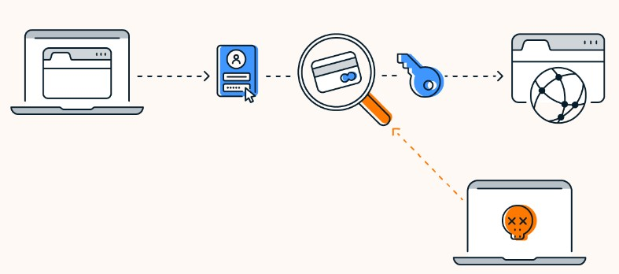
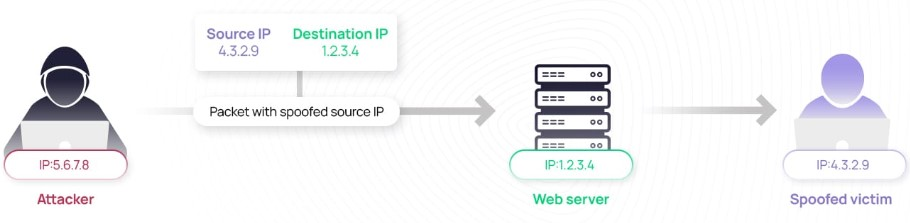

الرقم الجامعي: 1220031
التخصص: هندسة الحاسوب
المشاريع: تصميم معالج دورة واحدة، مجمع محسن باستخدام أداة Electric، نظام جدولة المعالج، حل مشكلة تجميع الحاويات باستخدام MIPS.
المهارات: مهارات تواصل ممتازة، مسؤولة ويمكن الاعتماد عليها، متعاونة، إدارة وقت رائعة.
الهوايات: القراءة، الرسم، الخَبز
الرقم الجامعي: 1222640
التخصص: هندسة الحاسوب
المشاريع: ملف أعمال تطوير واجهات أمامية، أدوات سطر أوامر لينكس، محلل DNS وHTTP، نظام عميل-خادم باستخدام المقابس (Sockets).
المهارات: قيادة قوية، التحدث أمام الجمهور، حل المشكلات، إدارة الوقت، العمل الجماعي والتواصل الممتاز.
الهوايات: الرسم، تنظيم الفعاليات، تعلم اللغات
يتضمن أمن الشبكات حماية الأنظمة من الوصول غير المصرح به أو سوء الاستخدام أو الأضرار. نظرًا لأن الإنترنت لم يُصمم بأمان قوي، فإن الثغرات شائعة ويجب معالجتها في جميع طبقات الاتصال.
البرمجيات الخبيثة هي برمجيات تهدف إلى إلحاق الضرر بالحواسيب أو تعطيلها. من الأنواع الشائعة:
قد تُستخدم الأجهزة المصابة ضمن شبكات روبوتية (botnets) لتنفيذ هجمات واسعة النطاق.
تغمر هذه الهجمات الهدف (مثل خادم أو شبكة) بكمية هائلة من البيانات مما يجعله غير قابل للاستخدام. تشمل العملية:
في الشبكات المشتركة، يمكن للمهاجمين استخدام أدوات التقاط الحزم (packet sniffing) لالتقاط بيانات مثل كلمات المرور. أدوات مثل Wireshark تتيح تحليل عميق لحركة الشبكة.
في هذا النوع من الهجمات، يقوم المهاجم بتزوير عنوان IP الخاص بالمرسل لإخفاء هويته أو إعادة توجيه الردود. يُستخدم ذلك غالباً في هجمات DoS أو هجمات رجل في المنتصف.
